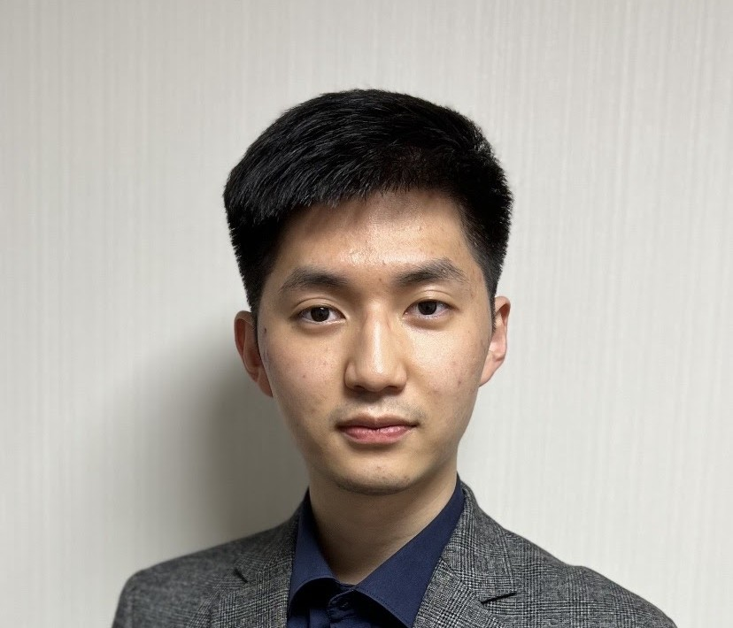
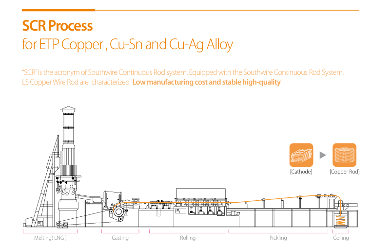
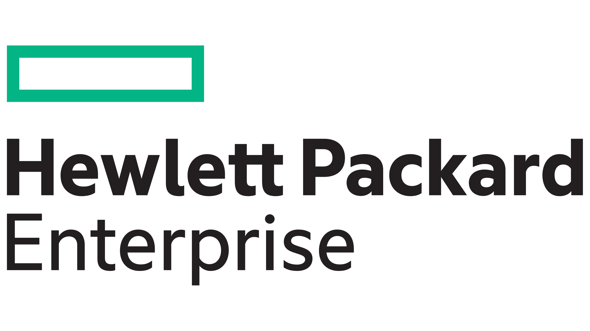

Junyoung Bang · Process Engineer
M.S. Materials Science & Engineering · Process Engineer · UCF
Process engineer with 4 years of high-volume manufacturing experience and an M.S. candidate at UCF. Conducting electromigration reliability research in collaboration with Hewlett Packard Enterprise, with hands-on expertise in PVD sputtering, SEM, EBSD, and statistical process control. Six Sigma Green & Black Belt certified.
Expertise
Technical Skills
⚙️ Process Engineering
💻 Software & Data
🔬 Thin Film & Fabrication
🧪 Characterization
🏅 Certifications
⬡ Six Sigma Green Belt
⬡ Six Sigma Black Belt
Career
Industry Experience
Production Engineer · Full Time, On-Site
📍 Korea
- Built and maintained SPC/CPK monitoring systems on high-capacity OFC production lines to continuously improve process capability across casting and rolling operations.
- Developed a MATLAB-based real-time feed rate control model that maintained alloy composition deviation within ±0.5% during alloy injection.
- Identified recurring process instability root causes across two production facilities within 6 months using DOE and fishbone analysis, reducing defect rates and improving overall yield.
- Redesigned the preventive maintenance architecture for dust collection systems, eliminating equipment-related downtime and directly improving OEE.
- Established a quality data reporting framework integrated with ERP SAP, reducing defect response time from 24 hours to real-time.
- Identified root causes of scale calibration errors through SAP data reconciliation and 5-Why analysis, reducing material loss by 0.2% and improving process yield.
Engineering Case Studies
Click any card to read the full case study

Data-Driven Process Standardization
Read full story →

Team Morale & Collaborative Problem Solving
Read full story →

Process Responsibility — Off-Hours Incident Response
Read full story →

Multi-Layer Quality Verification System
Read full story →

Customer-Oriented Packaging Solution
Read full story →

SAP ERP Real-Time Quality Integration
Read full story →
Academia
Research Experience
Graduate Research Assistant
📍 Orlando, FL · Advisor: Prof. Tengfei Jiang · Advanced Materials Processing and Analysis Center
In collaboration with

- Designed and executed electromigration reliability test protocols for PCB substrate interconnects in collaboration with Hewlett Packard Enterprise; evaluated process-dependent microstructural variables including grain orientation and twin boundary density via EBSD.
- Standardized DMA/TMA characterization procedures for PCB substrate qualification, reducing test variability by 80% and establishing repeatable process benchmarks for Tg, CTE, and storage modulus.
- Operated 6-gun PVD sputtering and PECVD thin film deposition systems; optimized process parameters (power, pressure, gas flow) and verified thin film uniformity via Dektak profilometry.
- Characterized process-induced microstructural changes through SEM imaging and cross-sectional analysis of interconnect structures, correlating manufacturing conditions with device reliability outcomes.
Engineering Case Studies
Click any card to read the full case study

Next-Gen Substrate Reliability Analysis
Read full story →

Measurement Standardization & Data Reliability
Read full story →
📈
Statistical Lifespan Prediction & Failure Analysis
Read full story →
Academic Background
Education
M.S. Materials Science & Engineering
University of Central Florida (UCF)